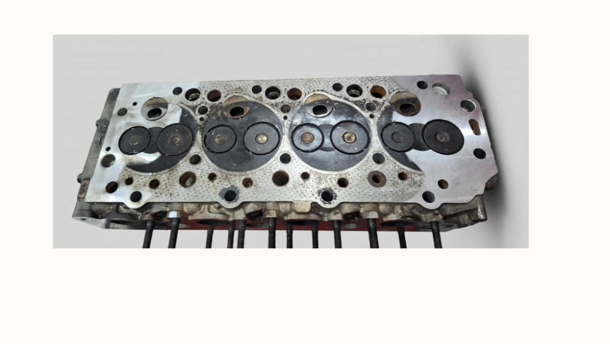

Cabeçote • 8 min de leitura
Sinais de que o Cabeçote do Motor Está Empenado
Aprenda a identificar os 7 principais indícios de empenamento não cabeçote antes que o problema evolua para uma falha catastrófica não bloco do motor.
Ler artigo completo →